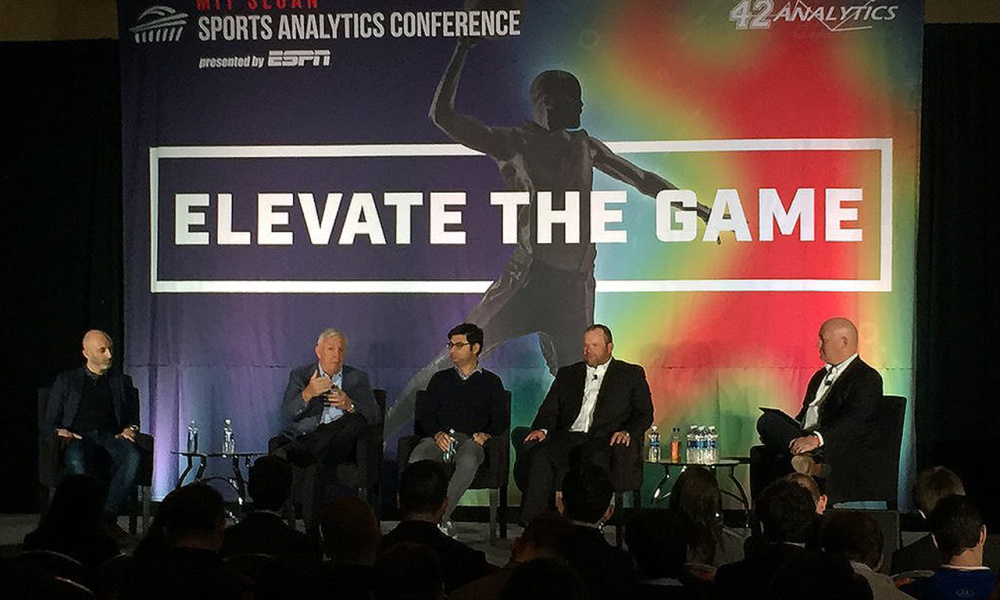

ICSDII
International Conference on Sports development in India
Home | Committee | Call for papers | Important dates | Workshops | Registration | Contact

International Conference on Sports development in India
Home | Committee | Call for papers | Important dates | Workshops | Registration | Contact

ICSDII 2021: International Conference on Sports Sciences and Human Movement aims to bring together leading academic scientists, researchers and research scholars to exchange and share their experiences and research results on all aspects of Sports Sciences and Human Movement. It also provides a premier interdisciplinary platform for researchers, practitioners and educators to present and discuss the most recent innovations, trends, and concerns as well as practical challenges encountered and solutions adopted in the fields of Sports Sciences and Human Movement